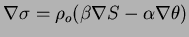
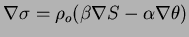
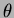

A second innovation discussed by Griffies concerns the nonlinearity in
the equation of state and its implication for the evaluation of the
isoneutral slopes. He argues that
 should be
written
 so that, for example, the zonal slope becomes:
should be
written
 so that, for example, the zonal slope becomes:

Compared to the current implementation out-lined above, the Griffies
innovations requires two non-linear equations to replace the equation
of state, twice as many differences because of the explicit
expressions with  and  , and a much wider stencil (ie. much
more computation) for the ``triads'' interpolation.
, and a much wider stencil (ie. much
more computation) for the ``triads'' interpolation.
We have not implemented these aspects of Griffies schemes on the basis that the additional computational costs and code complexity, so far, outweigh the immediate benefits.